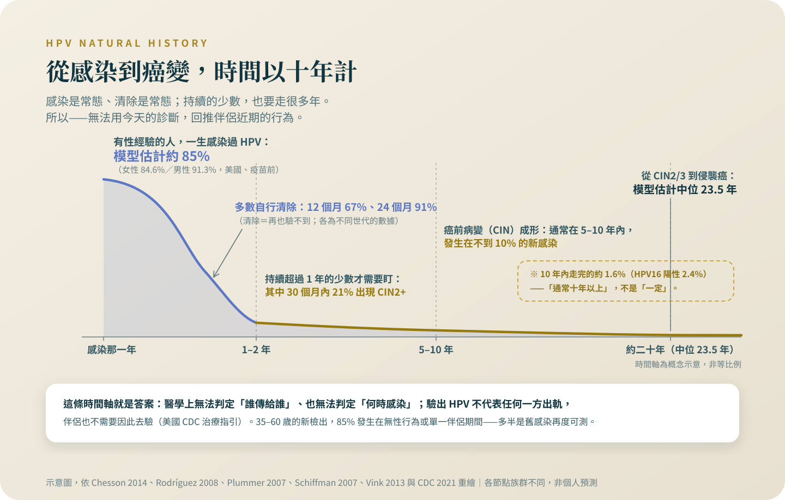

HPV：感染很常見，癌變很少見
感染近乎常態、多數自行清除、癌變以十年計——把自然史的數字攤開，回答「是誰傳給我的」為什麼沒有答案。
從持續感染到癌前病變通常要 5 到 10 年；從癌前病變到癌，全國登記的模型估計中位數是 23.5 年。這一篇寫給想問「是誰傳給我的」的人，也寫給坐在旁邊、不知道自己該做什麼的伴侶。
先說我的位置：根治性化放療與近接治療是我自己每天在做的治療。所以這個專題裡關於放療的每一句話，我寫得比別人更保守，不是更熱。
這一篇，我假設你不是一個人在讀——旁邊可能坐著你的先生或伴侶，中間放著一個問出口或沒問出口的問題：「是誰傳給我的？」我在診間看過這個問題傷人的樣子，所以想先把結論放在最前面：以現在的檢驗學，這一題沒有答案；而且從感染到發病的時間軸，讓「用今天的診斷推論最近發生了什麼」在生物學上不成立。下面每一句話，都有可以查的出處。
感染有多常見——接近「有過性生活」的常態
美國疾病管制中心的研究者用終生伴侶數的分布建過一個模型：有過至少一位異性伴侶的人，一生感染過 HPV 的機率，模型估計女性約 84.6%、男性約 91.3%——不是逐人驗出來的實測，但方向和實測世代一致[1]。實測長這樣：608 名美國大學女生每半年採檢一次，三年內 43% 驗到感染[2]。感染過 HPV 不是特定行為的印記；它幾乎是有過性生活的人共同的經歷。
絕大多數感染，身體自己處理掉了
同一個大學女生世代量到，新感染的中位持續時間只有 8 個月[2]。哥斯大黎加的世代研究追蹤 800 個致癌型別的感染，12 個月內 67% 清除[3]；在 4,504 名細胞學輕度異常者的兩年前瞻研究裡，既有的感染 24 個月內 91% 清除[4]。真正需要盯的是持續超過一年的那一小群：持續 12 個月以上的感染，30 個月內被診斷高度癌前病變的風險約兩成[3]。癌前病變那一層怎麼分級、怎麼處置，寫在〈抹片異常、原位癌、侵襲癌，差在哪〉。

從感染到癌，是一條以十年計的路
2007 年 Lancet 的回顧把自然史寫得很清楚：持續感染與癌前病變通常在感染後 5 到 10 年內形成，而且只發生在不到一成的新感染；侵襲癌則要再經過許多年、甚至數十年才出現[5]。荷蘭全國登記資料的數學模型估計，從高度癌前病變走到侵襲癌的中位時間是 23.5 年；10 年內走完的只有 1.6%，HPV16 陽性的病灶是 2.4%[6]。所以站得住的講法是「通常十年以上」，不是「一定超過十年」——有極少數走得快，但那個極少數是百分之一點幾。這條時間軸，就是下一段的地基。
「是誰傳給我的」，為什麼是一個沒有答案的問題
美國疾病管制中心 2021 年的性傳染病治療指引，把話寫得比任何安慰都直接：伴侶之間往往共有 HPV，「無法判定是哪一位伴侶傳來原本的感染」；「感染 HPV 不代表本人或伴侶有關係之外的性行為」；「感染的時間點無法被明確判定」[7]。指引還寫了一層多數人不知道的事：HPV 檢測可能在初次暴露的許多年之後才轉為陽性，因為潛伏的感染會再度活化——男性與女性都一樣[7]。這不只是理論：700 名 35 到 60 歲女性的兩年追蹤研究裡，新驗出的 HPV 有 85% 發生在沒有性行為、或只有單一伴侶的期間，能歸因於新伴侶的只有 13%[8]。中年之後驗出陽性，多半是多年前的感染再度變得可測，不是最近有誰帶了什麼進來。
把話說完整，兩邊都不偏：感染本身和性行為有關——伴侶數是感染的危險因子，這一點研究寫得清楚[1][2]。不成立的是另一件事：用今天的發病，回頭推論伴侶近期的行為。時間軸不允許這種推論，檢驗學也不支持。這兩句話可以同時為真，而且都需要被說出來。
伴侶需要做什麼？答案短得出乎意料
第一件事：不需要去驗。指引明白寫著「性伴侶不需要接受 HPV 檢測」，而且市面上沒有核准用於男性的 HPV 檢測[7]。第二件事：疫苗可以談，但保護的對象是他自己。4 價疫苗在 4,065 名年輕男性的第三期試驗裡，依計畫書分析對疫苗型別的外生殖器病灶效力 90.4%[9]；美國預防接種諮詢委員會的建議是 26 歲以下補接種，27 到 45 歲不做常規建議、改由醫病共同決定——因為多數成年人已經暴露過，而疫苗對已經存在的感染沒有治療效果[10]。台灣的成人接種是自費，現行 9 價疫苗的適應症到 45 歲[11]；費用各院不同，要向醫療院所或藥師確認。我查不到「伴侶接種能改善病人本身預後」的證據，所以這件事不要當成為了你而做的治療——它是他自己的保護。
你自己手上，有一個動得了的因子
菸。23 個研究、13,541 名個案的國際合作重分析：目前吸菸的人得子宮頸鱗狀細胞癌的相對風險是 1.60 倍——也就是抽菸那一群的發生比例，是不抽菸那一群的 1.6 倍——限定在 HPV 陽性女性的分析是 1.95 倍，而且抽得越多風險越高[12]。我把這段放在這裡，不是要回頭追究誰抽過菸——這個病的主因從頭到尾是持續感染，菸是輔因子；這也是發生風險的資料，不是復發風險，戒菸不是治療。但在一個大部分因素都不由你決定的病裡，這是少數你現在就能自己動手的一項，而且多數醫院有戒菸門診可以一起排。
下次回診，可以連同伴侶一起問的三句話
「我的情況需要做 HPV 型別檢測嗎？結果會不會改變治療或追蹤的安排？」
「我的伴侶需要做什麼嗎——要不要驗、要不要打疫苗？」（可以把這一篇拿出來，兩個人一起聽答案。）
「如果我想戒菸，能不能幫我轉戒菸門診，跟治療一起排？」
至於治療結束之後，自己要不要打疫苗、抹片還要不要做、女兒的公費疫苗怎麼安排，寫在〈追蹤怎麼排；疫苗和抹片現在還要不要〉。那是下一個階段的功課；今天的功課，是讓這個病回到它本來的樣子——一個很常見的感染，走了一條很少見、而且很長的路。
「是誰傳給我的」這一題在診間傷過很多對伴侶，而它在檢驗學上就是無解的。如果它正在你們家裡發酵，把這一篇連同出處帶去門診，讓醫師當著兩個人的面講一次；伴侶不需要驗，疫苗是他自己的保護，時程可以當場問。
參考資料
Chesson, H. W., Dunne, E. F., Hariri, S., Markowitz, L. E. (2014). The estimated lifetime probability of acquiring human papillomavirus in the United States. Sexually Transmitted Diseases, 41(11), 660–664. DOI: 10.1097/olq.0000000000000193
Ho, G. Y., Bierman, R., Beardsley, L., Chang, C. J., Burk, R. D. (1998). Natural history of cervicovaginal papillomavirus infection in young women. The New England Journal of Medicine, 338(7), 423–428. DOI: 10.1056/nejm199802123380703
Rodríguez, A. C., Schiffman, M., Herrero, R., et al. (2008). Rapid clearance of human papillomavirus and implications for clinical focus on persistent infections. Journal of the National Cancer Institute, 100(7), 513–517. DOI: 10.1093/jnci/djn044
Plummer, M., Schiffman, M., Castle, P. E., Maucort-Boulch, D., Wheeler, C. M.; ALTS Group (2007). A 2-year prospective study of human papillomavirus persistence among women with a cytological diagnosis of atypical squamous cells of undetermined significance or low-grade squamous intraepithelial lesion. The Journal of Infectious Diseases, 195(11), 1582–1589. DOI: 10.1086/516784
Schiffman, M., Castle, P. E., Jeronimo, J., Rodriguez, A. C., Wacholder, S. (2007). Human papillomavirus and cervical cancer. The Lancet, 370(9590), 890–907. DOI: 10.1016/s0140-6736(07)61416-0
Vink, M. A., Bogaards, J. A., van Kemenade, F. J., et al. (2013). Clinical progression of high-grade cervical intraepithelial neoplasia: estimating the time to preclinical cervical cancer from doubly censored national registry data. American Journal of Epidemiology, 178(7), 1161–1169. DOI: 10.1093/aje/kwt077
Workowski, K. A., Bachmann, L. H., Chan, P. A., et al. (2021). Sexually Transmitted Infections Treatment Guidelines, 2021. MMWR Recommendations and Reports, 70(4), 1–187. DOI: 10.15585/mmwr.rr7004a1
Rositch, A. F., Burke, A. E., Viscidi, R. P., et al. (2012). Contributions of recent and past sexual partnerships on incident human papillomavirus detection: acquisition and reactivation in older women. Cancer Research, 72(23), 6183–6190. DOI: 10.1158/0008-5472.can-12-2635
Giuliano, A. R., Palefsky, J. M., Goldstone, S., et al. (2011). Efficacy of quadrivalent HPV vaccine against HPV infection and disease in males. The New England Journal of Medicine, 364(5), 401–411. DOI: 10.1056/nejmoa0909537
Meites, E., Szilagyi, P. G., Chesson, H. W., et al. (2019). Human Papillomavirus Vaccination for Adults: Updated Recommendations of the Advisory Committee on Immunization Practices. MMWR Morbidity and Mortality Weekly Report, 68(32), 698–702. DOI: 10.15585/mmwr.mm6832a3
嘉義市政府衛生局。人類乳突病毒(HPV)疫苗（114年擴大公費接種對象）。
International Collaboration of Epidemiological Studies of Cervical Cancer; Appleby, P., Beral, V., et al. (2006). Carcinoma of the cervix and tobacco smoking: collaborative reanalysis of individual data on 13,541 women with carcinoma of the cervix and 23,017 women without carcinoma of the cervix from 23 epidemiological studies. International Journal of Cancer, 118(6), 1481–1495. DOI: 10.1002/ijc.21493
本文為一般性衛教說明，整理自公開發表的研究與官方公告，不能取代面對面的診療。研究結果適用的族群通常有嚴格條件，是否適用於你的情況，請與你的主治醫師討論。請勿依據本文自行調整、中斷或更換治療。
← 回到子宮頸癌專題